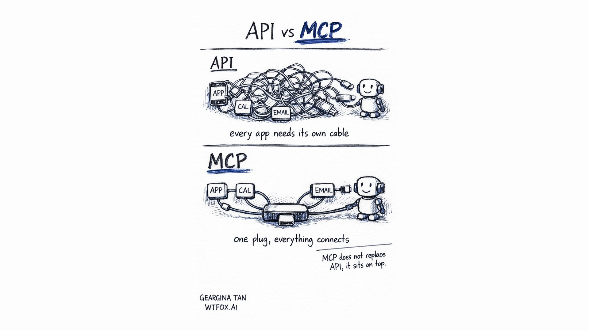

API vs MCP: What Is the Difference?
An API is how 2 apps talk to each other, and every app has its own. MCP is one standard plug that lets an AI assistant connect to many apps at once, without replacing the APIs underneath. Here is the whole thing in plain English, for people who use AI every day but never studied the plumbing.

Here is the short answer. An API is a private handshake between 2 apps. MCP is a shared socket that lets an AI use many apps through one standard connection, and it runs on top of APIs rather than replacing them. People describe MCP as the USB-C of AI, and that comparison holds up better than most.
I only worked this out properly after a conversation with my CTO. He used both words in the same sentence, I nodded along, and then realised on the way home that I could not have explained the difference to anyone. If you are in the same position, you are in good company. Most people using AI daily cannot explain it either, and nothing bad has happened to them yet. It does start to matter once you are choosing tools.
What is an API, in plain English?
An API is the agreed way for 2 pieces of software to talk to each other. You use them constantly without noticing. When you pay with a card, the shop's system is calling the bank through an API. When you log into something new using your Google account, that is an API too.
The catch is that every app designs its own. Your calendar has one shape, your email has a different shape, your CRM has a third. They all work, but none of them match. So if you want your AI assistant to reach 10 different tools, somebody has to sit down and wire up 10 separate connections by hand, then maintain all 10 when the apps change.
That is the real cost, and it is why "can the AI just read my calendar" used to be a bigger question than it sounded.
What is MCP, and what does it stand for?
MCP stands for Model Context Protocol. It is an open standard introduced by Anthropic in November 2024. Because it is open, the rest of the industry adopted it rather than building rivals, and in December 2025 it was handed to the Agentic AI Foundation under the Linux Foundation, so no single company owns it now.
Think about the drawer of chargers everyone had a few years ago. One cable for the phone, a different one for the camera, a third for the old laptop, and a fourth that nobody could identify. Then USB-C arrived and one plug fitted almost everything.
MCP is that, for AI. A tool builds one MCP connection, and any AI that speaks MCP can use it. Your AI sets it up once, and anything on the other side just plugs in.
MCP is the USB-C for AI. Set it up once, and any app that speaks MCP plugs in.
Does MCP replace APIs?
No, and this is the part people get wrong most often.
The apps underneath are still talking through their own APIs. Nothing about that changed. MCP is a standard layer sitting on top, so the AI has one predictable way in instead of a different custom route for every tool. The tangle of cables did not disappear. It moved behind the hub.
API vs MCP, side by side
| Question | API | MCP |
|---|---|---|
| What is it? | The agreed way 2 specific apps talk to each other | One standard way an AI connects to many apps |
| How many connections do you set up? | One per app, each one different | One, reused by anything that speaks MCP |
| Who does the work? | A developer, per app, then maintains it | Mostly done for you if the tool supports MCP |
| Does it replace the other? | No, APIs are still underneath | No, it sits on top of APIs |
| Everyday comparison | A drawer of proprietary chargers | The one USB-C cable |
Why does this matter if you are not technical?
Because it changes what you are allowed to ask for.
Say you want an assistant that reads your CRM and your calendar, then drafts follow-ups for the deals going quiet. 2 years ago that was a project. Someone scopes it, someone builds 2 custom integrations, someone maintains them, and you wait.
If both tools support MCP, you connect them and start using it the same afternoon. Same outcome, different order of magnitude of effort. When you are deciding between 2 tools and one of them supports MCP, that is now a real point of difference rather than a line on a feature list.
It also gives you a better question to ask a vendor. Not "can you integrate with our systems", which everyone says yes to, but "do you support MCP", which has an actual answer.
Where should you start?
Do not go and read the specification. You will not need it.
Open whichever AI tool you already pay for and look for a connectors, integrations or MCP section in the settings. Connect exactly one thing you use every day, your calendar is the easiest, and then ask the AI a question that requires it. Something like what is my first meeting on Thursday and who is coming. When the answer is right, you have understood MCP better than any article can teach you, because you have watched it work on your own data.
Then stop. One connection is a good week's progress.
If you want the longer version of this, the same ground is covered hands-on in the Claude Masterclass, where everyone connects their own tools in the room. And if you are still choosing between assistants, this piece on why "just use ChatGPT" is bad advice is the companion to this one.
Working out how AI fits your actual week? That is what I do with teams, and I run workshops on it in Singapore and online.
Geargina Tan is the co-founder and COO of WTFox.ai and runs hands-on AI workshops in Singapore for people with no technical background.
Keep reading: why "just use ChatGPT" is bad advice, or what happened when 40 professionals met Claude for the first time.